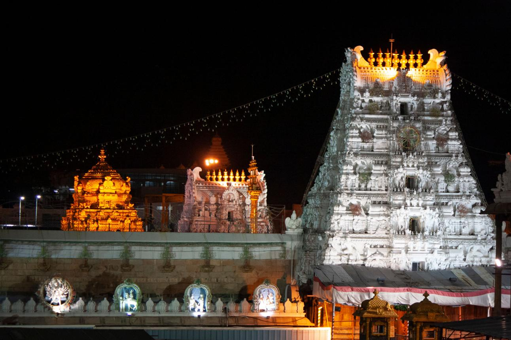

Tirupati
Journey into the spiritual heart of Andhra Pradesh at Tirupati, one of the most revered pilgrimage destinations in India and home to the sacred Tirumala Venkateswara Temple. Nestled amidst the scenic Tirumala Hills, the temple attracts millions of devotees from around the world who come seeking blessings and spiritual fulfillment. The journey through the hills, surrounded by forests and serene landscapes, adds a sense of devotion and tranquility to the experience. The atmosphere is filled with chants, rituals, and deep faith that create a powerful spiritual environment. Beyond its religious significance, Tirupati also offers beautiful viewpoints, waterfalls, and peaceful natural surroundings that enrich the journey. The city stands as a remarkable blend of spirituality, culture, and scenic beauty.